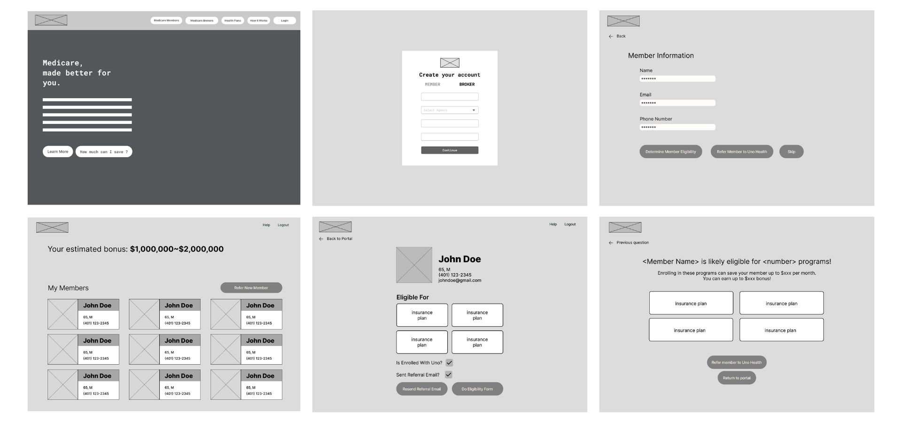
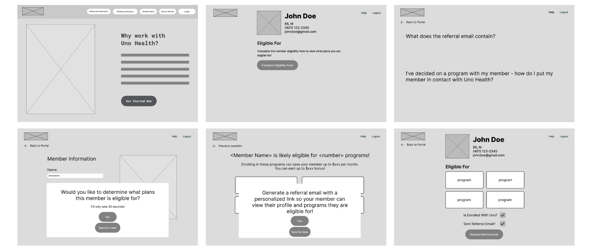
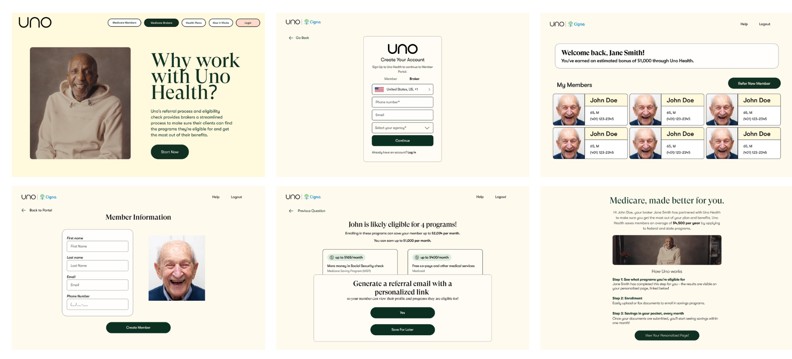

Iterative Redesign
I. Introduction
Our objective with this project was to tackle a startup’s problem statement, design a solution to the problems they listed, and complete a full iterative design process. We sought to strengthen our skills of co-designing and co-building, working collaboratively to develop a clickable prototype. An important part of this project included interacting with our client, a startup lead product designer, and learning how to ask clarifying questions, receive and incorporate feedback, and meet client’s expectations. We practiced receiving design critiques, from peers, professors, and startup representatives, as well as critiquing our peers designs.
We really enjoyed this experience and developed our skills as UIUX designers, working together to address client’s problem statements, update our wireframes according to feedback we received, and produce a clickable prototype.
II. Defining the Problem
We worked with Uno Health, specifically Elise Livingston, who is the lead product designer for the startup. Uno Health identifies eligible Medicare members and enrolls them in assistance programs. Uno Health’s problem statement is that they would like to attract Medicare brokers and incentivize them to refer their members to Uno Health. Along those lines, they would like to support Medicare brokers checking their members’ eligibility or directing their members to check their own eligibility, and encourage Medicare brokers to direct members towards Uno’s services.
We began by meeting as a group to review our project brief, Uno Health - Engaging Medicare Brokers. We carefully refined our questions to ensure they were specific and relatively easy to answer; our questions can be viewed in the comments section of the project brief, linked above. Here is the revised version of our project brief.
III. Sketching
We began by each sketching 2 hand drawn end-to-end flows to solve Uno Health’s problem statement, attempting to incorporate all of the key functionalities discussed in the project brief.
Aanya's Sketch
Lena's Sketch

Lena's flow 1

Lena's flow 2
Yaxin's Sketch

Yaxin's flow 2
Yiwei's Sketch
IV. Research
Individually, we researched Medicare brokers to gain a better understanding of their interests, their jobs, and how they operate in the insurance industry. We compiled our research on Medicare brokers to help inform our design decisions, which can be seen here.
IV. First Iteration Wireframe
After reviewing all of our sketches side-by-side, we discussed the elements that we found the most effective in each sketch, carefully referring back to the project brief to ensure we were addressing the startup’s problem statement. We then created a quick sketch that combined the best elements of each of our sketches, which can be viewed below.

Quick sketch
Unfortunately we designed our second interaction over this first iteration in Figma. However, the Figma can be viewed in the Loom video we submitted for studio, which can be found here.
Because the aim of our assignment was to encourage more brokers to work with Uno Health, our main objective was to design a process in which brokers could easily see if their clients were eligible for Uno Health’s services and refer them. We agreed to prioritize keeping our design as straightforward as possible, just to ensure the process of referring clients was streamlined in order to accommodate the broker’s needs while keeping it simple to encourage them to continue working with Uno Health. Our sketches included a broker portal page, an idea many of us had, to provide brokers an easy way for them to track and refer members to Uno Health. Thus, the portal had a list of the broker’s clients and a heading illustrating how much money they earned through their partnership with Uno, to encourage them to continue working with them. We debated how we wanted to represent member profiles, eventually settling on individual member profiles that would open to another page (rather than a chart) to make sure it would still be easy to view on a phone as well. We also spent some time trying to decide how to structure the login, since we had to keep in mind that Uno Health's usual users are typically older people who might be confused easily.
We also had some additional unique ideas, like adding a chat function for brokers to connect with their clients, a search function to sort through the broker’s list of clients, a tutorial section or a unique custom referral page for each member to be hosted on the website; however, we wanted to ensure we followed the original intentions of our assignment without getting too complicated and kept many of these ideas as stretch goals.
VI. Studio Critique
We prepared and submitted a Loom video for our first iteration of our low-fidelity wireframe which can be found here. Our peers provided us with important feedback, both on how we could improve our Loom video and how we could improve our wireframe design.
- Rather than scrolling through Figma during our Loom video, build the Figma prototype feature so the Loom can be recorded in Figma “preview” mode
- Replace the “...” with text from the actual website
- Replace the checkered box placeholder for profile pictures (too busy) with a solid color
- Imply the clickability of each member on the broker’s homepage
- Rethink the words on the buttons or the order that the buttons appear in - it wasn’t intuitive what clicking “refer member” versus “skip” would entail
- Include an image on the “Member Information Page” to fill the empty space
- Fix spacing of “Member” and “Broker” on the “Login Page”
VII. Wireframe Iteration Two
After the critique studio, we met to revise our original low-fidelity wireframe and re-record our Loom video. We spent most of our time discussing how to restructure the buttons so that they would be more understandable, and our solution was to include pop-ups. The design can be viewed in the new Loom video here.
The Figma can be viewed here on page “Second Iteration Low-Fidelity Prototype.”

Second iteration low-fidelity wireframe
VIII. Mid-Project Standup Check-In
Our client’s representative, Elise Livingston, provided feedback in the comments section of the new Loom video.
- Explore more around the process of checking eligibility:
- How does this design work if the broker wants to walk the member through the eligibility check themselves and then send them to Uno if they’re eligible?
- What happens if the member wants to check their eligibility at another time?
- What happens if the broker doesn’t have time to check their eligibility, but they still want to refer the member to Uno?
- Continue to explore what information is displayed in the portal to help brokers while they’re on the phone with members or help them follow up afterwards if they need/want to
IX. Wireframe Iteration Three
Taking Elise’s feedback into consideration, we focused on the broker-member relationship a bit more closely.
- She helped clarify the role a broker would take during the eligibility-verification process and the information they’d have access to, which helped us reevaluate the desires of our users and how to implement them in our design. She also provided us with two example scenarios (one where the broker is walking through the eligibility form with their client and sending them to Uno after, or one where they direct the client to take the form themselves) and encouraged us to readapt our eligibility process to accommodate both possibilities. To do so, we incorporated two types of referral emails that could be sent (one that encouraged the client to take the eligibility form, had the broker not taken the form yet, and one that listed eligible programs had their broker taken the form for them), and added a “Help” page that would explain this distinction. Additionally, we added pop-up messages asking the broker if they’d like to send this referral email during the process of adding a new member to their portal; however, we also made sure to incorporate means for them to skip sending the email or skip taking the eligibility form if they did not wish. Finally, in case the member wanted to check their eligibility at a later time, we also added a personalized member profile page that included a member’s information and eligible programs if they had taken the eligibility test, and a link to this page would be sent to them via referral email.
- Elise also had minor edits regarding some of the wording on our copy, which we also implemented easily.
Here is our third iteration of our low-fidelity wireframe. The Figma can be viewed here on page “Third Iteration Low-Fidelity Wireframe.”

Third iteration low-fidelity wireframe
X. High Fidelity Prototyping
Visual Style Guide
Uno Health provided us with a general Figma overview, which can be viewed here. Thus, we based our visual style guide off of the typography, colors, themes, and icons we found in the Figma overview. We believe the startup chose the colors of dark green and beige to ensure there was high color contrast, even in grayscale. Additionally, there was a clear visual hierarchy throughout the website, since they used GT Super Display for headers and GT Walsheim for subheaders or body text. Any highlighted text or icons were highlighted in light green, which also helps guide the user as they navigate the interface. One suggestion we had was to make the “Uno Health Homepage” background color the same as the “Page Background” background color to ensure color consistency. Additionally, on the homepage, the button hovers are light pink, which felt inconsistent with the rest of the visual style guide, and also led to low color contrast on the “Medical Broker Homepage.” Thus, we would suggest altering the way the button hovers look visually on the homepages.
Visual design style guide
Interactive High Fidelity Prototype
Once we created our visual style guide, we worked on our high-fidelity wireframe. We didn’t make any changes at this stage. The Figma can be viewed here on page “High Fidelity Prototype.”
Because we wanted to ensure our designs were clean and straightforward like the rest of Uno Health’s webpage, we utilized clean backgrounds and popups or textboxes with black borders to clearly separate common regions. Because much of Uno Health’s color schemes are light or cream-colored, any dark colors (like black or dark green) were high-contrast and immediately grabbed the viewer’s attention; thus, we often relied on color to convey something that could be interacted with (ie, dark green buttons). Images, too, were an attention-grabber in contrast to the simplicity of the rest of the webpage; thus, profile pictures were used as a visual focal point in the members’ pages to provide some visual diversity.

High fidelity wireframe
XI. Final Founder Feedback
To prepare for our final meeting with Uno’s lead product designer, Elise Livingston, we created another Loom video which can be found here. We took note of her comments and concerns.
Elise appreciated our ability to view the broker enlistment process holistically and accommodate for the various circumstances in which the broker would take an eligibility form or ask a client to take it themselves. However, she also asked us to consider a “happy path”, a path that we would want to prioritize, and use our design to push the broker down that process (while still accommodating for any edge cases, just de-emphasizing them).
- In order to adopt this critique, we’d redesign the flow of the member-creation process by having the broker take the eligibility form for the member first, and only adding their relevant contact information after the member has been determined to be eligible. We would still allow for the possibility of them to skip taking the form; however, we’d make the link to do so smaller, grayed out, and without a button background.
Additionally, she encouraged us to consider the mindset of the users of the website: for example, many of the Uno Health members are older and may not be as fluent with technology. Thus, having a separate tab in the login for brokers might be confusing for them.
- As such, we considered re-designing the login to have a checkmark asking if the user is a broker or not; if they are, they can click the check and go through an additional page asking for relevant information (document, company they work for, etc); but most members would know not to click it (and it would be unchecked by default).
She also wanted us to consider how a broker would feel making a portal and login for Uno Health, where they might need to do the same with other organizations as well. Doing so might be overwhelming – so is there a way to make this process easier for them?
- This was definitely an interesting point of contention – we considered somehow incorporating an account that linked to the company they worked for, to make it easier to centralize the data/members. This would depend on the individual company and their websites, so this might be more of a back end issue; however, it’s interesting to consider the broker’s workflow outside of Uno Health’s website.
She also encouraged us to think about the handoff point, after the broker and client have settled on a plan. How do they tell clients to contact Uno Health, and how involved are they in the process?
- In order to address this, we thought it would be helpful to have an additional button on the member’s profile page that would essentially indicate to Uno that the member is interested in a specific plan and would like to speak with Uno. Uno could keep track of this and then reach out to that member. It’s definitely interesting to consider how involved a broker should be once they have settled on a plan with the member - should the broker also be part of this call? Based on our research, we weren’t entirely sure, and our proposed solution assumes that the broker will no longer be involved in the process, and essentially “hand off” the member to Uno Health.
XII. Reflection
Not only was this our first collaborative UIUX design project, but it was our first time working with a startup and addressing a written problem statement that they provided us with. It was particularly fun to challenge ourselves by selecting Uno Health, since none of us were too familiar with Medicare brokers and thus, got to experience researching more about the industry while brainstorming solutions. We worked well together, meeting frequently to brainstorm ideas, address design concerns, redesign our wireframe, record our Loom videos, and complete our hand-in webpage. We each worked on a few screens for each wireframe iteration and then met to ensure they were consistent with each other. It was difficult to incorporate Uno’s existing visual style guide, since there were a few inconsistencies between button hover functionality and background color, but we did the best we could! We applied design principles we covered in class to a project and presented our results in a professional manner. Overall, we enjoyed this experience and learned a lot from the process - special thanks to Uno Health and Elise Livingston for providing us with this opportunity!